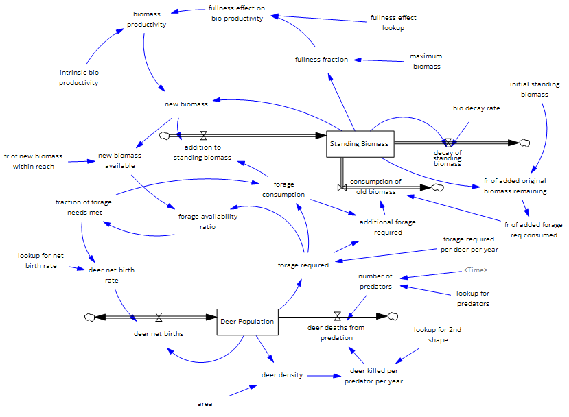
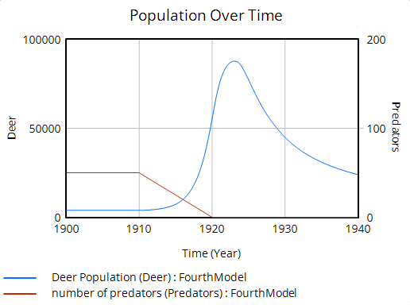
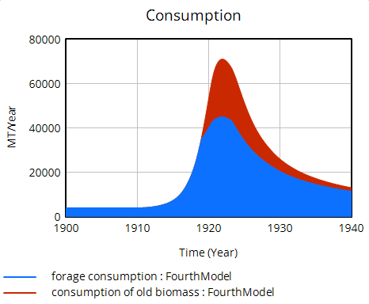
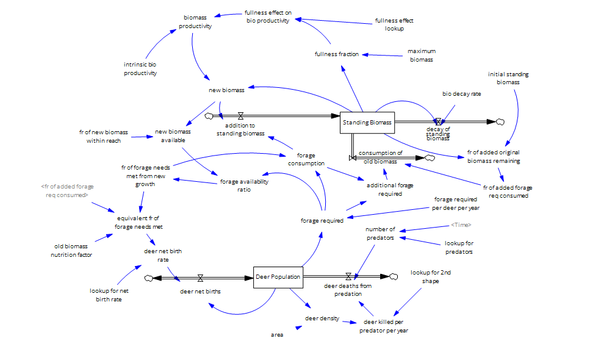
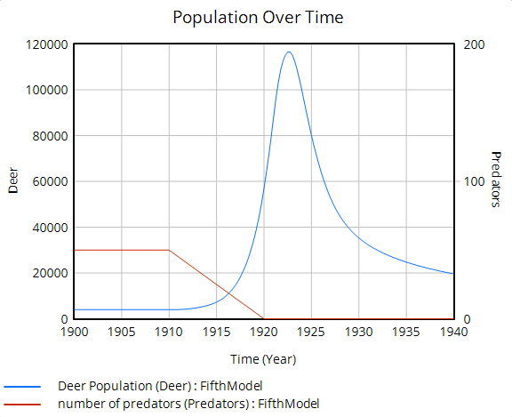

Problem
The Kaibab Plateau case study is a classic example of overshoot and collapse: after predators were removed in the early 1900s, the deer population exploded, overgrazed its food supply, and then crashed. The goal was to model that feedback between deer, predators, and forage biomass from 1900 to 1940, and to test how adding an old-biomass nutrition factor changes the outcome.
My role
Sole author; built and ran both models in Vensim.
Model structure & method
Setup:
- Simulated 1900–1940 with a 0.25-year time step.
- Two stocks:
Deer Population(starting at 4,000) andStanding Biomass(starting at 50,000 MT), on an 800 KA area. - Predators held at 50 until 1910, then reduced to zero by 1920 through a time lookup.
Fourth model:
- Deer deaths from predation driven by a lookup on deer density (deer killed per predator per year).
- Deer net birth rate driven by a lookup on the fraction of forage needs met.
- Biomass growth limited by a fullness effect, with a 0.1/year decay rate and 75% of new biomass within reach of deer.
- When new growth falls short, deer consume old standing biomass in proportion to how much of the original biomass remains.
Fifth model:
- Added an
old biomass nutrition factorof 0.25, so old biomass counts for only a quarter of the nutrition of new growth. - Birth rate now uses an
equivalent fr of forage needs met: the fraction met from new growth plus the old-biomass fraction weighted by that factor.
Results
Both models reproduce the overshoot and collapse. Once predators drop out, the deer population climbs sharply and peaks around 1922–1923, then declines through 1940 as forage is depleted. In the fourth model the peak reaches roughly 87,000 deer, and consumption of old biomass spikes alongside it. The fifth model peaks higher, at about 116,000 deer, and then falls to around 20,000 by 1940.
Figures
Stock-and-flow diagrams and simulation output from Vensim.




